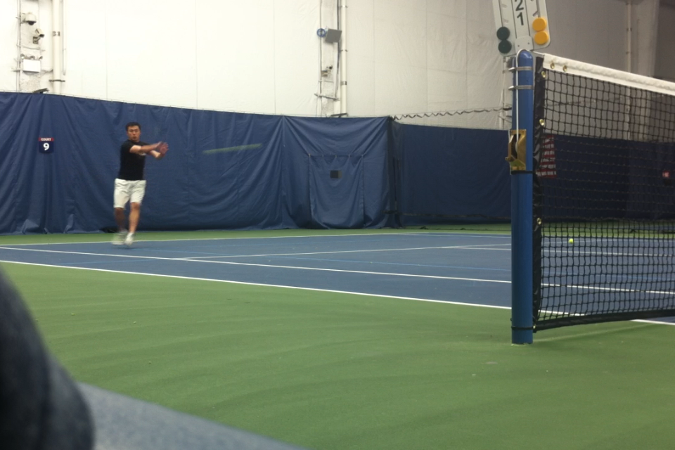

A higher contact point when hitting on the rise is usually seen in offensive situations.
For example, a player (Player A) hits a topspin ball that comes back clearing the net by a wide margin but lands relatively short. Knowing that the ball will bounce high, the opposing player (Player B) may move in and choose to hit the ball before reaching the peak of its bounce. If Player B strikes the ball above net height and as the ball moves upwards, Player B will be able to aggressively hit through the ball and cut down on Player A's reaction time simultaneously.
First identify the depth and bounce of the ball.
In this situation I see that the ball is going to land relatively short on my forehand side. I also see that the ball is coming back high with topspin meaning that the ball will bounce high after it hits the court.
Second, track the bounce of the ball and get into an appropriate stance. I see that the ball will be short on my right hand side and get into a semi-open stance
Start your swing fractions of a second after the ball bounce. It may help to take a short backswing to make the timing easier as shown here.
Swing to contact using your body's momentum. Here I make contact with the front edge of my body above net height. Notice that I am in the middle of my stride pushing off my back foot.
Follow through with the swing landing on your front foot.
